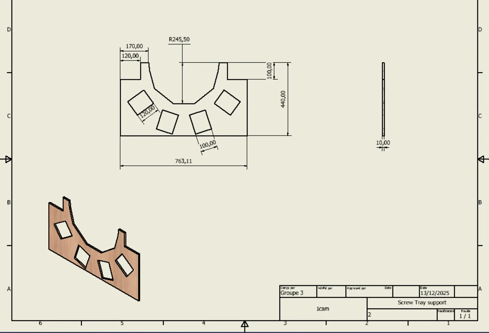

Conception CAO
Le versant mécanique du projet de tri de vis : toute la machine modélisée sous SolidWorks. Pièces paramétriques, sous-assemblages, mécanisme à manivelle, plateau porte-bacs en arc de cercle, et mises en plan cotées prêtes pour la fabrication.

Derrière chaque vis triée, il y a une machine. Et derrière la machine, des dizaines de pièces qui doivent s'emboîter au dixième de millimètre.
Chaque pièce est modélisée de façon paramétrique : esquisses cotées, fonctions de révolution et d'extrusion, contraintes d'assemblage. La rampe distribue les vis vers six bacs répartis sur un arc de cercle — une géométrie pensée pour qu'un seul mouvement de pivot couvre toutes les destinations. L'ensemble est assemblé hiérarchiquement en sous-ensembles, puis réuni dans un assemblage final.
Au-delà du modèle 3D, chaque pièce est documentée par une mise en plan normalisée : vues orthographiques, cotation fonctionnelle, cartouche. Sur le plateau porte-bacs, on retrouve le rayon d'arc de 245,5 mm, une largeur hors-tout de 763 mm et six logements inclinés de 120 mm — de quoi passer directement à la découpe.
L'assemblage final regroupe les sous-ensembles et les pièces unitaires — de la manivelle d'entraînement au plateau de réception.
La tech, en clair